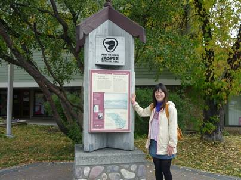
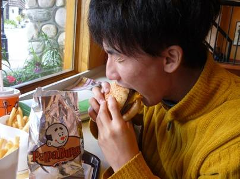
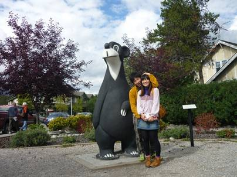
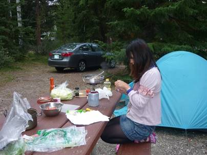
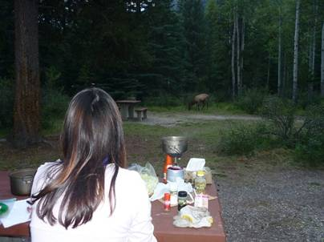
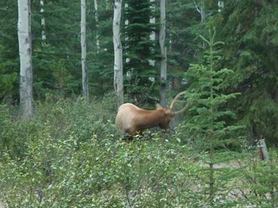
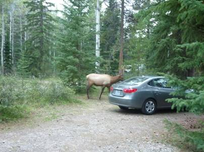

６日目(9/9)～キャンプ場でのんびり～
Whistlers Campground



今日はジャスパーのキャンプ場でのんびり。Whistlersキャンプ場もレベルは相当高く、温水シャワーが完備されている。一日中テントの中にいるのも暇なので、ジャスパーの町に繰り出すことにした。カナディアンロッキーの中にはいくつか観光の街があるが、有名なのはバンフとジャスパーだ。バンフは日本人の観光客も多く訪れると言うが、ここ、ジャスパーは観光客の数はそこまで多くなく、かなり落ち着いた街でかなり気に入った。お昼はハンバーガーチェーンのA&Wでパパバーガーとモッツァバーガーのコンボを注文した。カナダではマックよりもA&Wの方が店舗数が多いような気がする。マックはあまり田舎の町では見かけないのに対し、A&Wは1000人規模の街ならたいていどこにでもあるような気がした。
そして、明日からの登山について情報仕入れようと観光案内所に行ったのだが、ここでショッキングな事実を知ることになった。
今回の旅では、BergLakeトレイルの他にもうひとつ、Skylineトレイルというジャスパー国立公園では最も有名で、標高が高いので景色も素晴らしいと評判のトレイルに行こうと思っていた。しかし、その標高の高さがたたってか今年はもう雪で閉ざされているという。僕たちは雪山用の装備も持っていなければ知識もない。断念せざるを得ず、明日は登山をやめてエドモントンに向かうことにした。

市街観光を終え、キャンプ場に戻ってきた。ここのキャンプ場は自分たちのスペースの中に上の写真のような机が置かれていたので、今日は外で食事を作ることにした。うっそうと茂る針葉樹の森の中で作るのは開放的でとても楽しい♪MECで買ってきたフライパンは軽いだけでなく、テフロン加工がしてあり焦げ付かない！楽しく調理をしていると・・・



まおの顔が突如かたまり、「なにあれ！」と叫んだ。見ると、前方に褐色の巨大な生き物が悠々と歩いている。どうやら野生のエルクのようだ。最初は敷地内で飼われているペットかと思ったが、そんなはずはない。良く見ると、エルクは他に何頭もいた。他のお客さんたちはエルクたちを見て「ファミリーだね」と驚く様子もなくおしゃべりしていた。